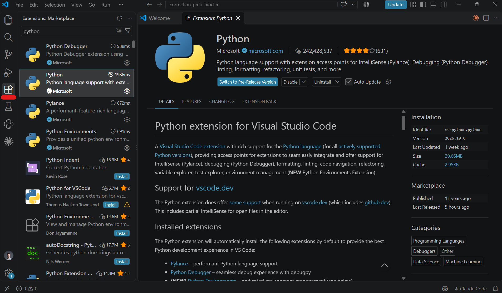
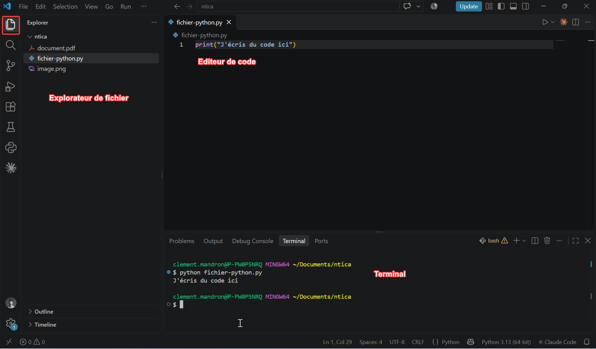
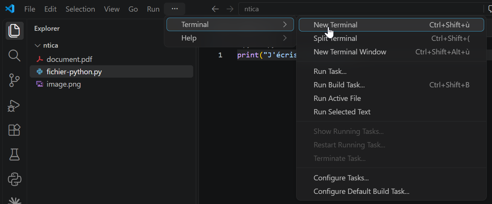
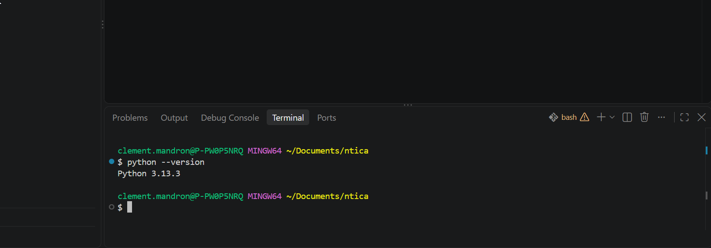
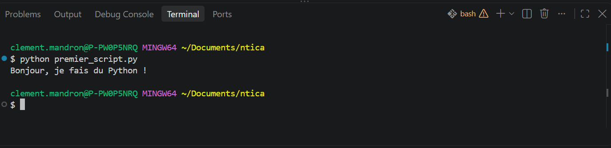

Introduction à Python pour le traitement de données
Python est un langage informatique très utilisé dans le traitement des données. Il possède plusieurs avantages qui ont contribué à sa notoriété :
- il est lisible (les fonctions sont en anglais)
- sa communauté est très hétérogène et dynamique
- c’est un langage couteau-suisse : les librairies permettent de réaliser des tâches très diverses (traitement de PDF, d’images, création de cartes…).
Par exemple, ses librairies de traitement de données sont très répandues : pandas, numpy, seaborn…
Aussi, le développement des IA génératives permet à des personnes non ou peu sachantes de produire du code fonctionnel sans trop de difficultés. Si maintenir ce code dans la durée ou en faire un outil partagé est une autre paire de manches, pouvoir accélérer le traitement de données ou de document est une vraie opportunité.
Nous vous encourageons néanmoins à vous former à l’apprentissage du code - voir quelques arguments ici
Avant de vous lancer
Si la production de code par l’IA peut avoir un effet bluffant, veillez à garder un bon niveau de maîtrise pour votre apprentissage. En effet, l’utilisation de l’IA a un certain nombre d’effets négatifs sur notre cerveau, comme l’accumulation d’une “dette cognitive” (voir Kosmyna et al. (2025)).
Quelques conseils :
- Gardez toujours en tête l’objectif. Posez-vous régulièrement la question de ce que vous souhaitez réaliser. Prenez le temps de l’écrire (crayon à la main !) et de découper votre problème en étapes.
- Quand vous sentez que l’IA vous “enferme” dans un tunnel sans solution, détachez-vous de la piste en cours. Par exemple, ouvrez une nouvelle conversation ou faites une recherche web classique.
- Ne laissez pas l’IA tout traiter dans un seul script réactualisé de nombreuses fois. Découpez votre travail en plusieurs étapes avec 1 script = 1 étape.
NB : ce cours ne concerne pas l’utilisation d’agents de code directement dans les éditeurs de code.
Utiliser Python sur son ordinateur
Installer un éditeur de code
Un éditeur de code est un traitement de texte pensé pour le code : coloration, autocomplétion, terminal intégré… Nous utiliserons Visual Studio Code (VS Code), gratuit et très répandu.
- Téléchargez VS Code depuis code.visualstudio.com et installez-le avec les options par défaut.
- Ouvrez VS Code, cliquez sur l’icône Extensions dans la barre de gauche (les quatre carrés), cherchez Python et installez l’extension publiée par Microsoft.

Petit tour d’horizon de VS Code :
- L’explorateur de fichiers (un dossier de votre ordinateur)
- Le terminal
- La zone où on édite les scripts (python ou autre)

Installer Python
Téléchargez la dernière version de Python sur python.org.
Lancez l’installateur. Sous Windows, cochez la case « Add python.exe to PATH » en bas de la première fenêtre avant de cliquer sur Install Now. Sans cela, votre ordinateur ne trouvera pas Python.
Vérifiez l’installation : dans VS Code, ouvrez un terminal (Terminal > New Terminal) et tapez :
python --versionLe terminal doit afficher la version installée, par exemple Python 3.13.1. Sur Mac, utilisez python3 au lieu de python.

New Terminal">
Créer et exécuter votre premier script
- Créez un dossier pour vos travaux, par exemple
ntica, puis ouvrez-le dans VS Code (File > Open Folder). C’est dans ce dossier que vous placerez vos scripts et vos fichiers de données. - Créez un fichier
premier_script.py(File > New File) et écrivez :
print("Bonjour, je fais du Python !")- Sauvegardez (
Ctrl+S). - Exécutez le script dans le terminal :
python premier_script.pyLe message s’affiche dans le terminal : votre premier script fonctionne !

Pour utiliser un code généré par l’IA, la démarche est la même : collez-le dans un nouveau fichier .py, sauvegardez, exécutez.
Ne pas se décourager des erreurs
Votre utilisation de Python va forcément générer des erreurs. Ne vous laissez pas décourager par leur apparition. Certaines sont très fréquentes et subsistent, même pour des développeurs plus expérimentés. En voici quelques-unes communes :
Python n’est pas installé
python : Le terme « python » n'est pas reconnu comme nom d'applet de commande,
fonction, fichier de script ou programme exécutable.Solution : installer Python depuis python.org. Sous Windows, cochez bien la case « Add python.exe to PATH » lors de l’installation, puis fermez et rouvrez le terminal.
La librairie n’est pas installée
ModuleNotFoundError: No module named 'pandas'Solution : installer la librairie dans le terminal :
pip install pandasAttention, le nom à installer diffère parfois du nom importé dans le code : import fitz s’installe avec pip install pymupdf. En cas de doute, demandez à l’IA.
pip install tapé dans Python au lieu du terminal
>>> pip install pandas
File "<stdin>", line 1
pip install pandas
^^^^^^^
SyntaxError: invalid syntaxSolution : les chevrons >>> indiquent que vous êtes dans l’interpréteur Python. Quittez-le avec exit(), puis relancez la commande dans le terminal.
Le fichier n’est pas dans le bon dossier
FileNotFoundError: [Errno 2] No such file or directory: 'liste_planches.pdf'Solution : le code cherche le fichier dans le dossier depuis lequel vous lancez le script. Placez le fichier dans le même dossier que le script et placez-vous dans ce dossier avec cd, ou indiquez le chemin complet du fichier dans le code.
Le chemin Windows contient des \
SyntaxError: (unicode error) 'unicodeescape' codec can't decode bytes in
position 2-3: truncated \UXXXXXXXX escapeSolution : sous Python, \ est un caractère spécial. Écrivez le chemin avec des / ("C:/Users/moi/plu/liste_planches.pdf") ou ajoutez un r devant (r"C:\Users\moi\plu\liste_planches.pdf").
Le fichier .py n’est pas sauvegardé
Pas de message d’erreur ici : le script tourne, mais avec l’ancienne version du code, ou ne fait rien du tout s’il est vide.
Solution : sauvegardez avec Ctrl+S avant chaque exécution. Dans VS Code, un rond blanc sur l’onglet signale un fichier non sauvegardé ; vous pouvez activer File > Auto Save pour ne plus y penser.
Erreur d’indentation après un copier-coller
IndentationError: unexpected indentSolution : en Python, les espaces en début de ligne ont un sens. Recopiez le code en entier plutôt que par morceaux, sans ajouter ni retirer d’espaces.
Dans tous les cas, copiez le message d’erreur complet et collez-le à l’IA avec votre code : c’est le moyen le plus rapide de comprendre et de corriger le problème.
Références
Bibliographie
- Python pour la data science, cours de Lino Galiana (ENSAE) : partie « Premiers pas »